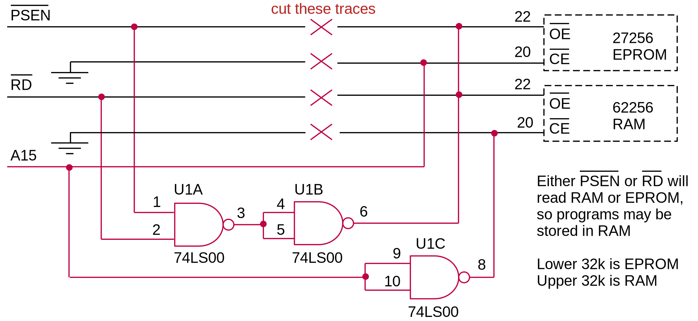

MOVING FORTH 7
Part 7: CamelForth for the 8051
by Brad Rodriguez
This article first appeared in The Computer Journal #71 (January/February 1995).
Under the prodding of Our Esteemed Editor, I present CamelForth for the 8051. CamelForth for the 6809 will follow soon! This 8051 Forth occupies about 6K of program memory. Alas, the full source listing would take 16 pages of TCJ, so this article includes only the significantly changed portions of the kernel. [Note for web publication: see the end of this page for a link to the 8051 source code.] These should illustrate how the high-level code is modified for the 8051 assembler, and for subroutine threading. The full source code is available in the Forth Roundtable on GEnie as file CAMEL51.ZIP, and the freeware 8051 assembler as file A51.ZIP. But first...
Z80 ERRATA
In the file CAMEL80H.AZM, the definition of DO is given as
['] xdo ,BRANCH . . .
It should be
['] xdo ,XT . . .
This is of no consequence on the Z80 (where ,BRANCH and ,XT are identical), but it became embarrassingly obvious on the 8051.
Also, in the words S" and (S"), the word ALIGN should really be ALIGNED. On the Z80 -- and the 8051 -- both are no-ops, so this mistake didn't make itself evident.
8051 CAMELFORTH MODEL
In issue #60 I summarized the design decisions for an 8051 Forth. To recap: the 8051's retarded memory addressing practically demands the use of subroutine threading. This means the hardware stack (in the 8051 register file) is the Return Stack. The Parameter Stack (a.k.a. Data Stack) is in 256 bytes of external RAM, using R0 as the stack pointer. Since that article, I've discovered that it's better to keep the Top Of Stack item (TOS) in DPTR than in R3:R2. Thus:
| reg adrs | 8051 name | Forth usage |
|---|---|---|
| 0 | R0 | low byte of PSP (Parameter Stack Pointer) |
| 1-5 | R1-R5 | scratch registers for Forth |
| 6-7 | R6-R7 | loop index |
| 8 | high byte of PSP and UP (also output on P2) | |
| 9-7Fh | 119 bytes of return stack (more on 8052s!) | |
| 81h | SP | low byte of RSP (Return Stack Pointer) |
| 82-83h | DPTR | Top-Of-Stack item |
| E0,F0h | A,B | scratch registers for Forth |
This incorporates an idea from Charles Curley [CUR93]. On a register-rich machine like the 8051, we can keep the innermost loop index in registers. This makes LOOP and +LOOP much faster. DO must still push two values on the Return Stack: the old loop index, and the new loop limit! UNLOOP must of course restore the loop index from the Return Stack -- kudos to the ANSI team for making UNLOOP a distinct word! Note that R6:R7 are not the topmost Return Stack item, merely the innermost loop index.
Port 2 (P2) contains the high byte of the Parameter Stack Pointer (allowing R0 to address external memory), which is also the high byte of the User Pointer -- the low byte of UP is assumed to be 00. I learned the hard way that P2 can't be read while executing from external ROM, so I keep a copy of the P2 byte in register 8.
I have a novel implementation of BRANCH and ?BRANCH. Since the 8051 model is subroutine-threaded, high-level Forth is compiled as true machine code. So BRANCH can be implemented with an SJMP (or AJMP or LJMP) instruction. ?BRANCH can be implemented with a JZ instruction, if the zero/nonzero status of the top-of-stack is put in the accumulator (A register). The subroutine ZEROSENSE does this. So, BRANCH and ?BRANCH become
BRANCH: SJMP dest
?BRANCH: LCALL ZEROSENSE JZ dest
Similar routines LOOPSENSE and PLUSLOOPSENSE allow a JZ instruction to be used for LOOP and +LOOP. For these, a call to UNLOOP must appear after the JZ, to clean up the Return Stack when the program "falls out" of the loop.
In the assembly language source file I have manually replaced the sequence
LCALL word RET
with the shorter and faster
LJMP word
in many places [CUR93]. This works as long as "word" isn't a return-stack operator (such as R> or >R). LCALL and LJMP have also been replaced with ACALL and AJMP where possible. The CamelForth compiler does not attempt these optimizations.
I wrote the 8051 kernel to use "Intel" byte order (low byte first). Then I discovered that the address compiled into an LJMP or LCALL is stored high byte first. Rather than rewrite the entire kernel, I included a byte-swap in those words which compile LCALLs: COMPILE, !CF and ,CF (all in the Dependency word set).
Listing 1 gives the 8051 assembly language "primitives", and Listing 2 gives the Dependency word set.
HARVARD ARCHITECTURES
The 8051 uses a "Harvard" architecture: program and data are kept in separate memories. In embedded systems, these are typically ROM and RAM, respectively. ANS Forth is the first Forth standard to address the restrictions of a Harvard architecture. Briefly, ANS Forth says that a) application programs can only access Data memory, and b) all of the operators used to access memory and build data structures must operate in Data space. (Ref. section 3.3.3 of the ANS document [ANS94].) This includes the Forth words
@ ! C@ C! DP HERE ALLOT , C, COUNT TYPE WORD (S") S" CMOVE
Yet the Forth compiler still needs to access Program space (also called Code or Instruction space). And Forth needs to maintain a dictionary pointer for Program space as well as Data space. So I've added these new words (shown in Listing 3):
I@ I! IC@ IC! IDP IHERE IALLOT I, IC, ICOUNT ITYPE IWORD (IS") IS" D->I I->D
The "I" prefix stands for "Instruction" (since "P" and "C" have other meanings in Forth). ICOUNT and ITYPE are needed to display strings which have been compiled into ROM. IWORD copies the string left by WORD from Data space to Code space -- needed to build Forth word headers and ROMmed strings. D->I and I->D are equivalents of CMOVE, which copy to and from Code space.
VARIABLEs must have addresses in Data space. So they can't use the traditional practice of putting the data immediately after the Code field. Instead, the Data space address of the data is stored after the Code field. In essence, a VARIABLE is a CONSTANT whose value is the Data space address. (Note that the traditional CONSTANT is still valid.)
CREATEd words, and words built with CREATE...DOES>, must work the same way. Here's how they look in Program space:
CODE word: ...header... 8051 machine code
high-level: ...header... 8051 machine code
CONSTANT: ...header... LCALL-DOCON value
VARIABLE: ...header... LCALL-DOCON Data-adrs
CREATEd: ...header... LCALL-DOCON Data-adrs
Note that CONSTANT must replace the value stored by CREATE, and : must "un-allot" both this value and the LCALL DOCON.
S" presents special problems. Strings defined with S" ("text literals") must reside in Data space, where they can be used by such words as TYPE and EVALUATE. But we expect those strings to be part of a definition, and to exist in ROM in a ROM forth environment. We could store the string in Program space, and copy it to HERE when referenced, but the ANS document does not allow text literals to exist in this "transient" storage region (ref. sections 3.3.3.4 and 3.3.3.6 [ANS93]). Also, if WORD returns its string at HERE -- as in CamelForth -- text literals must not alter this transient region.
My solution is to have S" store the string in Code space, but permanently reserve space for it in Data space, and copy it from Code to Data when referenced. ANS Forth does not yet fully address the problems of Harvard processors; something like C's "initialized data" region may eventually be required.
Since ." strings can never be accessed by the programmer, they can be stored in Code space, using the words (IS") and IS". (These are the "old" (S") and S".) This adds two words to the kernel, but saves quite a bit of Data space. I plan to move the string-literal words into either the Dependency word set, or a new "Harvard" word set.
WRITING TO PROGRAM SPACE
The 8051 can't actually write to Program memory. There's no hardware signal for this, and no machine instruction. Under these circumstances, the CamelForth interpreter will work, but new words can't be compiled. You can get around this by causing some memory to appear in both Program and Data space. Figure 1 shows the modification to my board, an MCB8031 from Blue Ridge Micros (2505 Plymouth Road, Johnson City, TN, 37601, USA, telephone 615-335-6696, fax 615-929-3164). U1A and U1B create a new read strobe which is active for either a Program or Data fetch. EPROM is selected only when A15 is low (lower 32K), and RAM when A15 is high (upper 32K). You still can't write to EPROM, of course, but you can execute programs out of RAM! One disadvantage: this makes @ and I@ equivalent, so it's not immediately obvious if the wrong one was used somewhere.
Figure 1

NEXT ISSUE...
These modifications to the CamelForth high-level code are intended to be portable to either Harvard or non-Harvard ("von Neumann") machines. For the latter, the new Program-space words are simply equated to their Data-space equivalents, e.g. on the Z80,
IFETCH EQU FETCH
ISTORE EQU STORE
ITYPE EQU TYPE
etc.
In the next installment I shall modify the 8051 source code to work on the 6809...thus approaching a truly portable model by successive approximation.
REFERENCES
[ANS93] dpANS-6 draft proposed American National Standard for Information Systems - Programming Languages - Forth, June 30, 1993. "It is distributed solely for the purpose of review and comment and should not be used as a design document. It is inappropriate to claim compatibility with this draft standard." Nevertheless, for the last 16 months it's all we've had to go by.
-
http://www.forth.com/forth-books/
-
ftp://ftp.taygeta.com/pub/Forth/Literature/
[CUR93] Curley, Charles, Optimization Considerations, Forth Dimensions XIV:5 (Jan/Feb 1993), pp. 6-12.
Source code for 8051 CamelForth is available on this site at http://www.camelforth.com/public_ftp/cam51-15.zip.